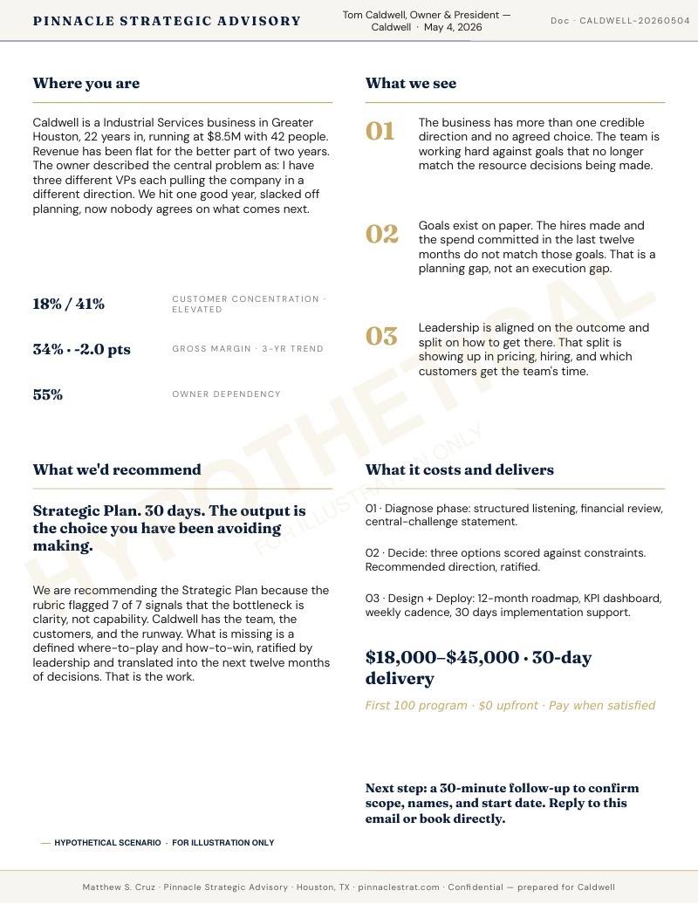

View full sample →
Services
How Pinnacle works.
Every engagement starts with a free Strategic Snapshot. From there, the active offer is a 30-day Strategic Plan under the First 100 program. The other services run after Tier 2.
Free. Ninety minutes. No contract.
The Snapshot is the first conversation. No NDA. No intake form. You bring your situation. Nine years of operating experience in Houston. Together you surface the three highest-leverage opportunities in your business and decide if a deeper engagement makes sense.
You leave with a clearer view of where you stand, regardless of whether you ever hire Pinnacle.
- Ninety-minute working call with the principal, not a junior
- One-page Snapshot leave-behind delivered within 24 hours
- Honest fit assessment, including a clear "no" if Pinnacle is not the right firm
- No contract, no NDA, no obligation to continue
30-Day Strategic Plan. $0 upfront.
Pinnacle's active offer for the first 100 clients. Four weeks from kickoff to plan. Plus 30 days of implementation support. Diagnose, Decide, Design, Deploy. The same four phases applied to your numbers, your constraints, and your team.
$18,000 to $45,000 depending on complexity. Deferred payment. You pay when satisfied. That is not a marketing slogan. It is the actual contract.
- Written diagnostic naming the structural problems by their real names
- Three financially modeled strategic options, all defensible to start Monday
- 24-month roadmap with named owners, quarterly milestones, and a KPI dashboard
- First 30 days of implementation support included, not upsold
Methodology, Visible
What a Snapshot leaves behind.
Every Strategic Snapshot ends with a one-page document delivered within 24 hours. Three things make it worth the call: it names the central problem in your own language, it proposes a specific path with terms, or it tells you Pinnacle is the wrong firm. The samples below illustrate three of the four engine paths. Each is a hypothetical scenario built to demonstrate the methodology, not a real engagement.
All three samples are hypothetical scenarios prepared to illustrate Pinnacle’s methodology. Names, financials, and engagement details are fabricated for demonstration. The methodology, the rubric, the four phases, and the engagement terms are real.
After the Plan
Three engagement formats run after the First 100.
Once a 30-day Strategic Plan has identified the work, these are the engagements that execute it. None of them run cold. All of them follow a Snapshot.
Strategy that runs the business.
Most businesses operate on instinct, not strategy. We change that. In 60 to 90 days, we deliver a comprehensive diagnostic and a 12 to 36 month strategic roadmap, built from your actual business data. Not generic templates.
You leave the engagement knowing exactly where to focus, what to stop doing, and how to measure progress.
- Comprehensive business diagnostic across operations, finance, sales, and team
- 12 to 36 month strategic roadmap with quarterly milestones
- Operating cadence and KPI dashboard handed off to your leadership team
- 90-day check-ins through the first year of execution
Redesign how value moves through your business.
When the model stops working, doing more of the same only makes things worse. We redesign how your business creates and captures value. New revenue streams. Smarter pricing. Better customer economics.
Whether you need to optimize what is working or rebuild from a new foundation, we build and execute the plan.
- Revenue stream analysis and new offer design
- Pricing strategy and margin recovery
- Customer segmentation, acquisition cost, and lifetime value modeling
- Pilot, validate, and scale the new model with your team
Your brand is often the only reason a prospect picks a competitor.
We rebuild yours from the inside out. Starting with strategic positioning. Ending with an identity, messaging system, and market narrative that actually reflects the business you have built.
The brand stops being a marketing problem. It becomes a growth lever.
- Market and competitor positioning analysis
- Brand strategy, voice, and messaging architecture
- Visual identity system, applied across web, sales, and pitch materials
- Launch playbook for sales, marketing, and customer success
Next Step